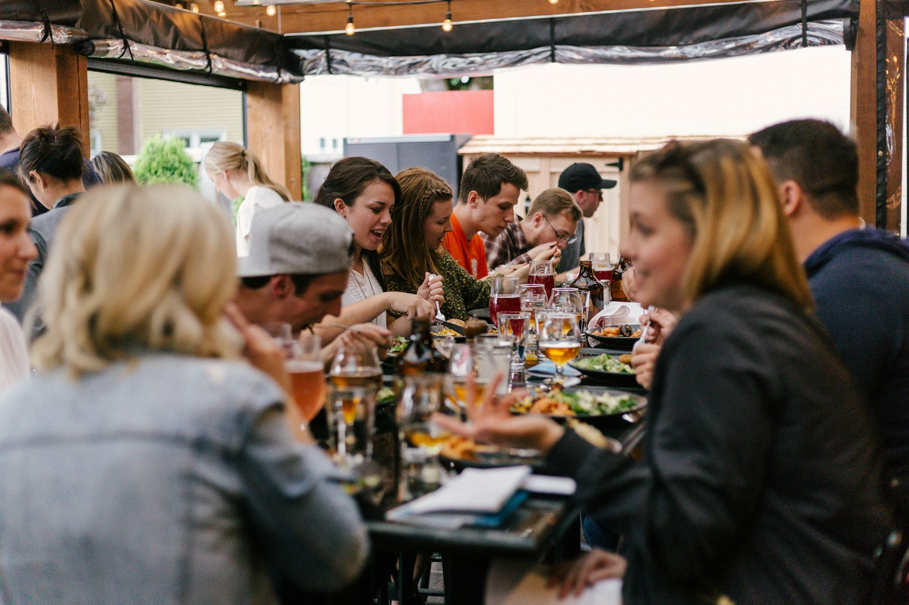
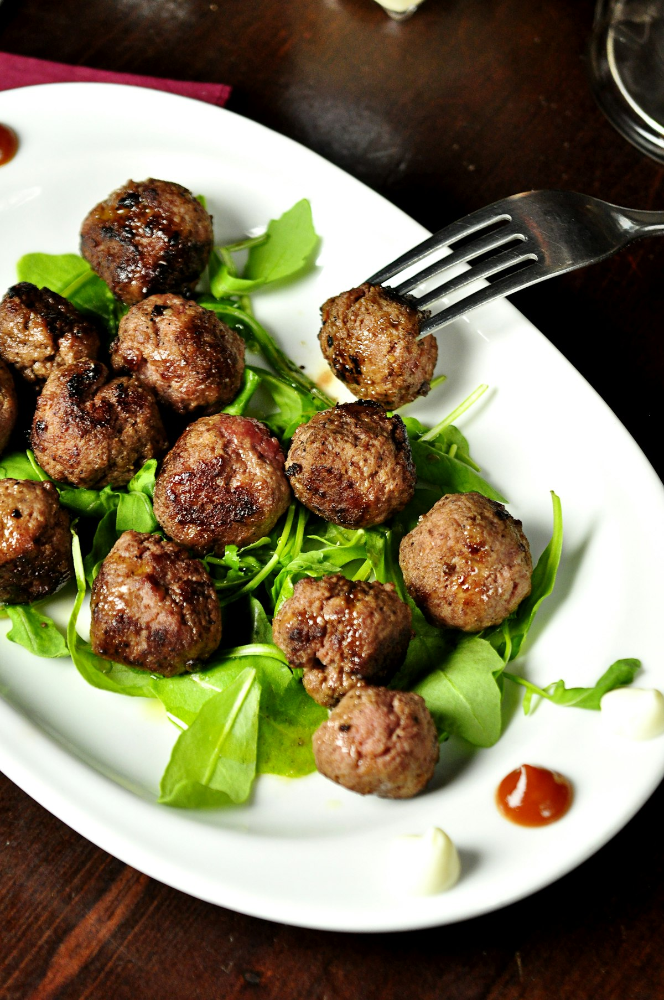

Hearty American-Greek Comfort
Beloved Landmark Favorites
From our morning griddle to evening roasts and legendary bakery case, every meal is prepared with family care and homestyle generosity.

Landmark Griddle Combo
Three fluffy buttermilk pancakes or thick golden French toast served with two country farm eggs any style, crispy applewood bacon or savory country sausage, and griddled hash browns.

Authentic Gyro Platter
Thinly shaved seasoned lamb and beef gyro meat carved fresh, served open-faced over grilled pita wedges with house-made cucumber garlic tzatziki, Greek horiatiki salad with feta, and seasoned french fries.

Towering Layer Cakes & Pies
Step up to our famous revolving glass bakery case and choose from chocolate fudge layer cake, red velvet, carrot cake with cream cheese frosting, New York cheesecake, and warm fruit pies.